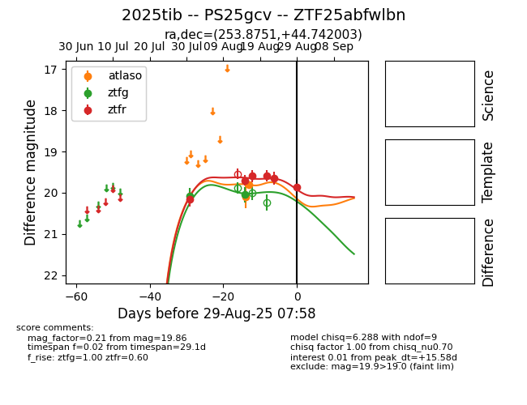

Target 2025tib at 2025-08-26 17:12, see:
FINK: fink-portal.org/ZTF25abfwlbn
Lasair: lasair-ztf.lsst.ac.uk/objects/ZTF25abfwlbn
ALeRCE: alerce.online/object/ZTF25abfwlbn
TNS: wis-tns.org/object/2025tib
YSE: ziggy.ucolick.org/yse/transient_detail/2025tib
alt names
ZTF25abfwlbn (ztf,fink)
2025tib (tns,yse)
PS25gcv (panstarrs)
coordinates:
equatorial (ra, dec) = (253.8751,+44.74200)
galactic (l, b) = (70.0104,+38.85070)
photometry
last atlaso=19.80, ztfg=20.04, ztfr=19.65
2 atlaso, 2 ztfg, 5 ztfr detections
